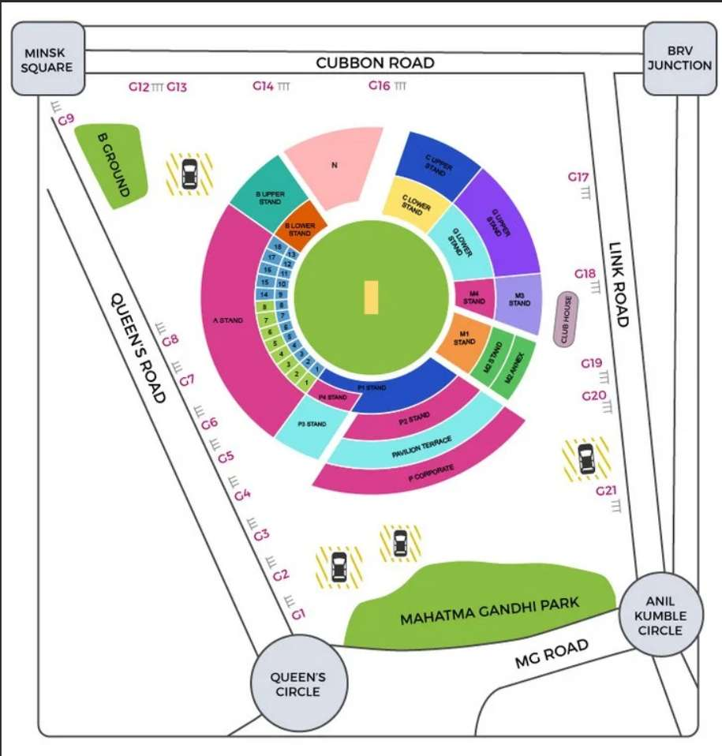

Next Event: Halftime Show in 15 mins
Interactive Map
Alert facility.
Immediate help.
Please remain calm and follow your designated exit.
Follow this direction

Pinch to zoom, drag to pan
System Status: Active | AI Nodes: 24 Online
Trigger mass haptic feedback & stagger exit instructions to all fans.